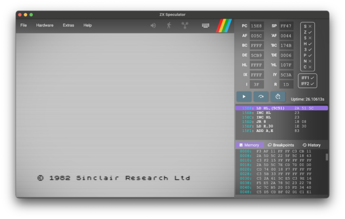
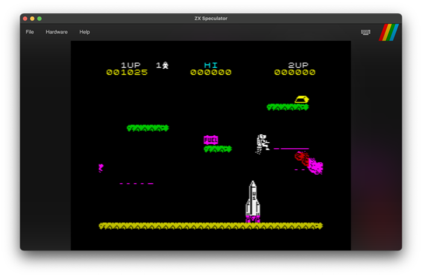
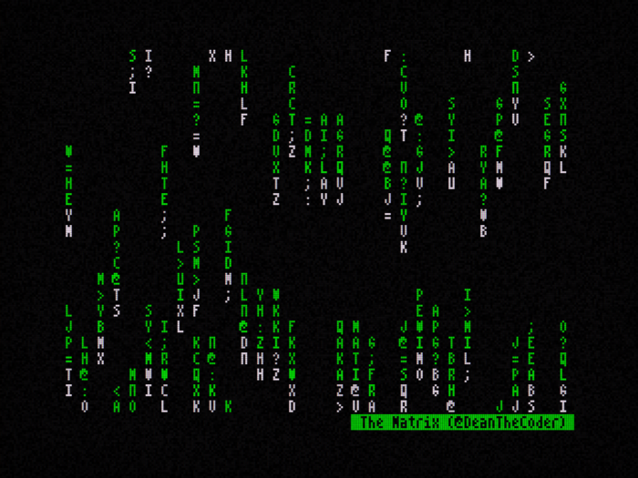
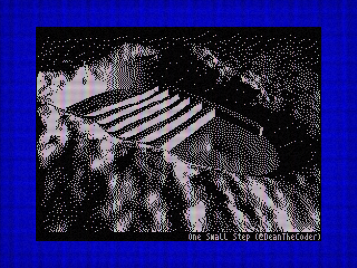

Overview
ZX Speculator is a robust, cross-platform ZX Spectrum 48K emulator developed in C#. It’s built using Avalonia for compatibility across various operating systems. The emulator supports a variety of file formats, including .z80, .bin, .scr, .tap, and .sna, and can even load files directly from .zip archives.

Key Features
- Cross-Platform Compatibility: Ensured by Avalonia.
- File and Archive Support: Handles multiple ZX Spectrum file formats and .zip archives.
- Display Options: Includes CRT TV and Ambient Blur effects.
- Joystick Emulation: Supports Kempston and Cursor joysticks.
- Sound Emulation: Utilizes OpenAL on Mac and Windows.
- Integrated Debugger: Features instruction stepping, breakpoints, and instruction history.
- Rollback Functionality: Allows users to revert to an earlier state using continuous recording.
- Theming: Customizable Sinclair BASIC ROM with various color schemes and fonts, including ZX Spectrum, BBC Micro, and Commodore 64.

Download and Setup
Users can download the emulator from the releases section. Mac users may need to unblock the application using a specific command. For developers, the source code is available, and the project can be built using a .NET compatible IDE like JetBrains Rider or Visual Studio 2022.
Development and Testing
Developed primarily on a Mac, ZX Speculator is also tested on Windows, ensuring broad compatibility. It successfully passes all ZEXDOC tests and FUSE emulator tests.
Experiments and Contributions
The emulator also includes various experimental projects such as a ray-tracer (No mean feat on a Spectrum!), Conway’s Game of Life, and other graphical effects.


Community and Resources
For more updates, users can follow me on Twitter. Additionally, the README provides useful resources for those interested in ZX Spectrum and Z80 programming.
Personal Journey and Project Inspiration
I’ve been a software developer for most of my life, but it all began with the humble ZX Spectrum 48K. BASIC was a fantastic starting point for coding, especially in those days when you could learn by typing out listings from books and magazines, essentially getting games for (almost) free.
In tribute to those early days, and driven by my interest in emulation, I embarked on creating my own emulator. Thus, the ZX Speculator project was born. My goal was to develop a fully functional 48K emulator that incorporated a few features rarely seen in other emulators—such as the ability to rewind time, a robust debugger, and CRT-like screen effects.
Conclusion
ZX Speculator is a comprehensive and versatile emulator for ZX Spectrum enthusiasts, offering a range of features and customization options. Whether for gaming nostalgia or development purposes, it serves as a powerful tool for exploring the ZX Spectrum ecosystem.
The C# code is freely available.
For more detailed information, visit the ZX Speculator GitHub Repository.